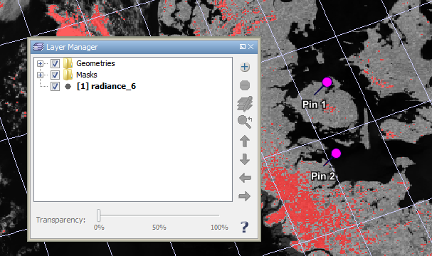
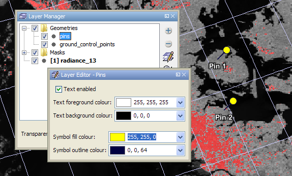
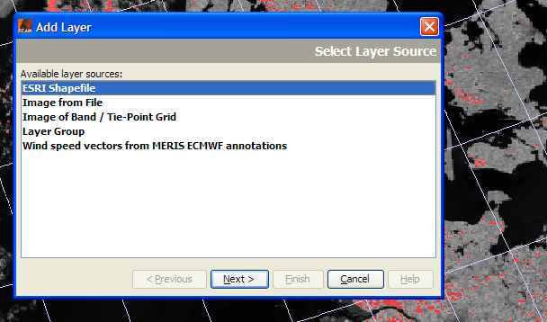
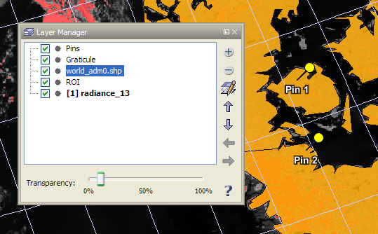

| The Layer Manager Window | |
The layer manager is used control what content is shown in the current Image View and how it is displayed.
You can open the layer manager tool window from the View / Tool Windows / Layer Manager
menu or by clicking the  icon in the tool bar.
A layer can be shown or hidden by using the check box left to the layer name.
Finer visibility control can be achieved by selecting a layer and using the Transparency
slider. Visibility changes will directly take effect in the Image View.
icon in the tool bar.
A layer can be shown or hidden by using the check box left to the layer name.
Finer visibility control can be achieved by selecting a layer and using the Transparency
slider. Visibility changes will directly take effect in the Image View.
|  |
| Layer manager tool window |
Add layer: Opens the Add Layer assistant window which lets you add a new layer to the current view.
 Remove layer: Removes the selected layer.
Note that not all layers can be removed.
Remove layer: Removes the selected layer.
Note that not all layers can be removed.
 Edit layer: Opens the Layer Editor
tool window which lets you alter the display properties of the selected layer.
Edit layer: Opens the Layer Editor
tool window which lets you alter the display properties of the selected layer.
 Move up: Moves the selected layer up so that it is displayed on top
of all layers following it in the list.
Move up: Moves the selected layer up so that it is displayed on top
of all layers following it in the list.
 Move down: Moves the selected layer down so that it is displayed
underneath of all overlying layers in the list.
Move down: Moves the selected layer down so that it is displayed
underneath of all overlying layers in the list.
 Move left: Moves the layer into the parent group (if any).
Move left: Moves the layer into the parent group (if any).
 Move down: Moves the layer into a child group (if any).
Move down: Moves the layer into a child group (if any).
Layer editors lets you alter layer properties in order to control the display of layer data. Different layer types have different layer editors. The following screenshot shows the layer editor of the geometry layer:
|  |
| Layer editor tool window |
Changes to the properties in this window are directly propagated to the layer selected in the layer manager and display updates will occur immediately in the current Image View.
The Add Layer assistant window shows a number of layer sources. It depends on the type of the current Image View which layer sources are present in this list. The following (BEAM 4.6) standard layers are always usable:
Layer sources which are restricted to special image views (BEAM 4.6) are:
|  |
| The 'Add Layer' dialog |
Select a layer source and press > Next. Depending on the type of layer selected, the assistant window will guide you through one or more option pages. Once the Finish button is enabled, you can add the new layer to the current Image View.
|  |
| Layer manager tool view after adding an ESRI shapefile layer |